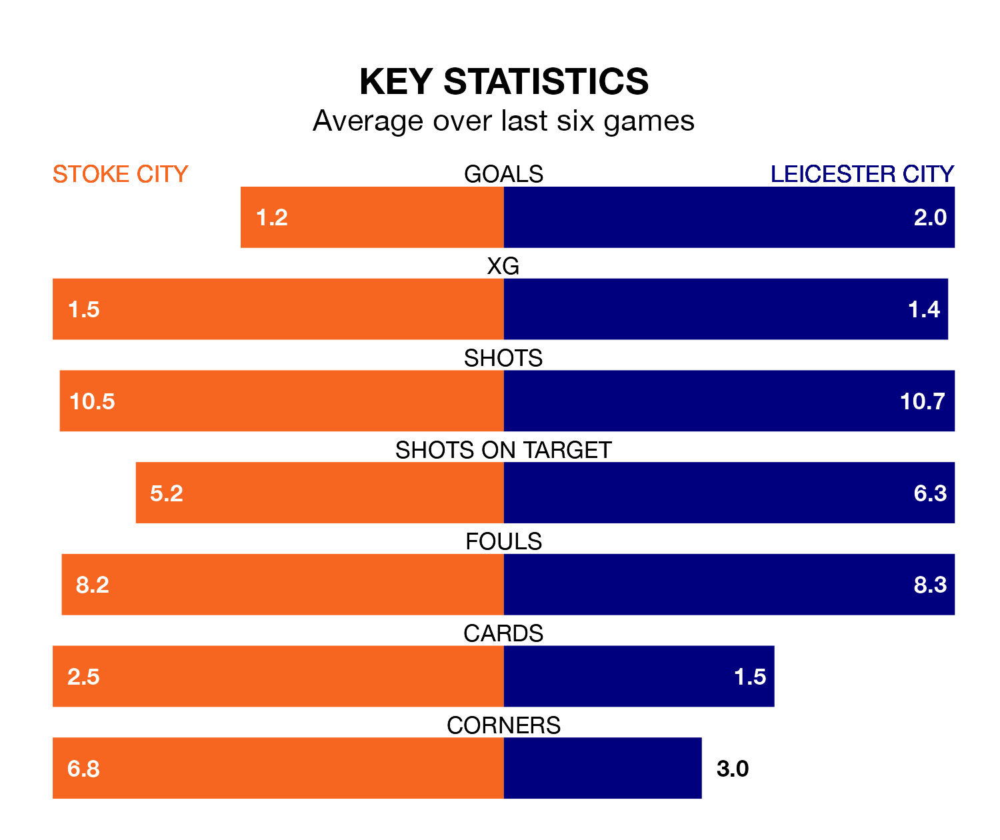

Leicester City are strong favourites to take all three points despite Stoke City's home advantage in Saturday's match at the bet365 Stadium.
*Betting Company* are offering odds of 1.67 on Leicester sealing the win, with the visitors sitting first in EFL Championship table.
Stoke, who are 19th in the league and 37 points behind the Foxes, are priced at 4.25 to win. A draw is set at 3.56.
With 59 goals in 29 games so far this season, Leicester are the league's highest scorers with 2.0 goals per game. And they are conceding fewer than average, letting in 23 goals at a rate of 0.8 per game.
Stoke, meanwhile, are below average scorers, with 1.0 goal per game, compared to a league average of 1.4. They have conceded 1.3 goals per game.
In the last 10 years, Stoke and Leicester have played each other on 10 occasions. Stoke won one of them, Leicester five, and they drew four times.
On average, the Potters scored 0.8 goals and the Foxes 1.9 in those matches.
Their last meeting was on October 7, when Leicester won 2-0 at home.
With Mads Hermansen between the sticks, Leicester City can rely on one of the league's safest pair of hands. He has kept nine clean sheets in his 28 appearances this season, and only two other 'keepers – West Bromwich Albion's Alex Palmer and Leeds United's Illan Meslier – have been able to prevent the opposition scoring on more occasions in EFL Championship.
In Stoke City's net, Jack Bonham has five clean sheets in 12 games. He has conceded a goal every 108 minutes, 30% more often than the 140 minutes between goals for Hermansen.
The Potters are in mixed form in EFL Championship, with two wins and two draws from their last six games.
With three wins and two draws over that period, the Foxes' form is better – they have taken 11 points from 18, compared to the hosts' eight.
Stoke's last match was on January 27, a 3-1 loss against Sunderland, with Jenson Seelt getting the goal for the Potters.
Leicester beat Swansea City 3-1 last time out, on Tuesday, with Kiernan Dewsbury-Hall, Stephy Mavididi and Yunus Akgün on the scoresheet.
Updated: 15:45 (UTC), 02/02/24